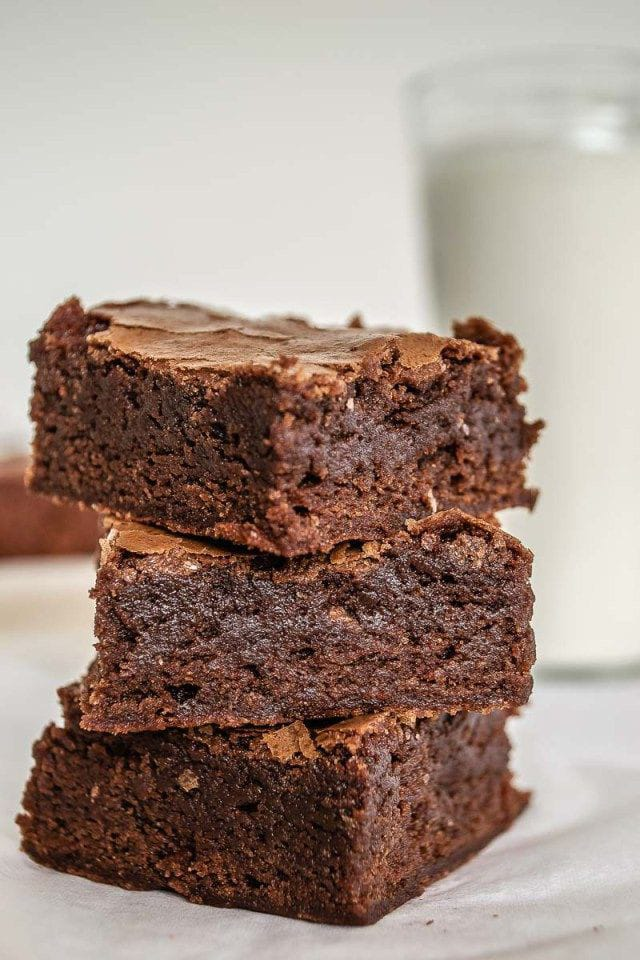

|
ENSALADA DE FRUTAS: La ensalada de frutas de alimentos fríos, aliñado con una salsa fría, que se sirve como entremés, entrante o antes de comer queso.
Hay de diferestes Precio: 15.000 y 18.000 |
 |
VASOS DE GELSATINA: La gelatina es una proteína pura y un producto alimenticio natural.
Precio: 3.000 |
 |
TRES LECHES: El postre tres leches es un bizcocho bañado, como su nombre indica, en tres tipos de leche: leche evaporada, leche condensada y crema de leche.
Precios: 5.000 |
 |
MARACUYA: Es un postre de consistencia gelatinosa este lo podemos presentar.
Precio: 5.000 |
 |
CAFE: El café, es un ingrediente que aporta mucho sabor y aroma al postre. El resultado tras elaborar un postre con café es delicioso.
Precio: 5.000
 |
|
BROWINE: Un brownie es un bizcocho de chocolate pequeño, Se llama así por su color marrón oscuro.
Precio: 7.000 |